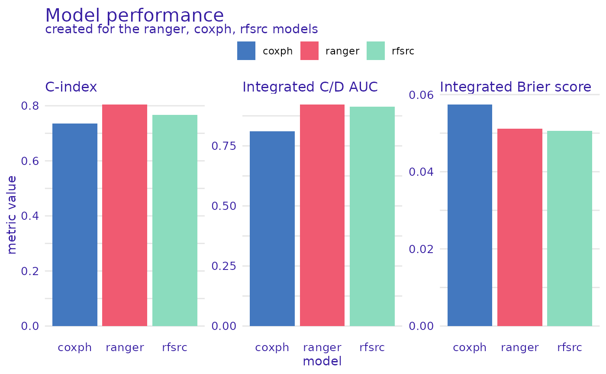
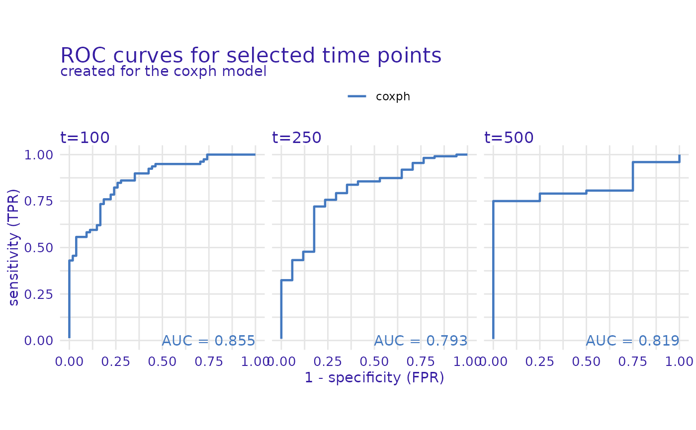
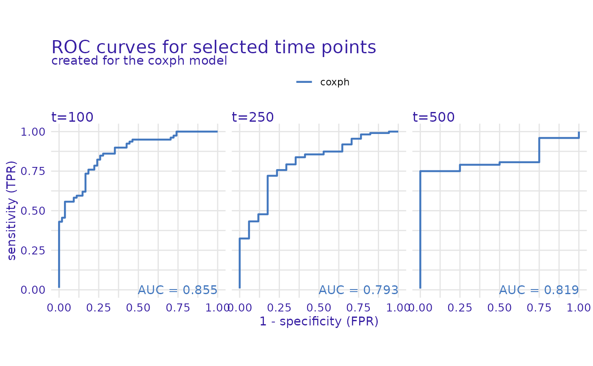

Dataset Level Performance Measures
Source:R/model_performance.R
model_performance.surv_explainer.RdThis function calculates metrics for survival models. The metrics calculated are C/D AUC, Brier score, and their integrated versions, as well as concordance index. It also can calculate ROC curves for specific selected time points.
model_performance(explainer, ...)
# S3 method for surv_explainer
model_performance(
explainer,
...,
type = "metrics",
metrics = c(`C-index` = c_index, `Integrated C/D AUC` = integrated_cd_auc,
`Brier score` = brier_score, `Integrated Brier score` = integrated_brier_score,
`C/D AUC` = cd_auc),
times = NULL
)Arguments
- explainer
an explainer object - model preprocessed by the
explain()function- ...
other parameters, currently ignored
- type
character, either
"metrics"or"roc". If"metrics"then performance metrics are calculated, if"roc"ROC curves for selected time points are calculated.- metrics
a named vector containing the metrics to be calculated. The values should be standardized loss functions. The functions can be supplied manually but has to have these named parameters (
y_true,risk,surv,times), wherey_truerepresents thesurvival::Survobject with observed times and statuses,riskis the risk score calculated by the model, andsurvis the survival function for each observation evaluated attimes.- times
a numeric vector of times. If
type == "metrics"then the survival function is evaluated at these times, iftype == "roc"then the ROC curves are calculated at these times.
Value
An object of class "model_performance_survival". It's a list of metric values calculated for the model. It contains:
References
[1] Harrell, F.E., Jr., et al. "Regression modelling strategies for improved prognostic prediction." Statistics in Medicine 3.2 (1984): 143-152.
[2] Brier, Glenn W. "Verification of forecasts expressed in terms of probability." Monthly Weather Review 78.1 (1950): 1-3.
[3] Graf, Erika, et al. "Assessment and comparison of prognostic classification schemes for survival data." Statistics in Medicine 18.17‐18 (1999): 2529-2545.
[4] Uno, Hajime, et al. "Evaluating prediction rules for t-year survivors with censored regression models." Journal of the American Statistical Association 102.478 (2007): 527-537.
Examples
# \donttest{
library(survival)
library(survex)
cph <- coxph(Surv(time, status) ~ ., data = veteran, model = TRUE, x = TRUE, y = TRUE)
rsf_ranger <- ranger::ranger(Surv(time, status) ~ .,
data = veteran,
respect.unordered.factors = TRUE,
num.trees = 100,
mtry = 3,
max.depth = 5)
rsf_src <- randomForestSRC::rfsrc(Surv(time, status) ~ .,
data = veteran)
cph_exp <- explain(cph)
#> Preparation of a new explainer is initiated
#> -> model label : coxph ( default )
#> -> data : 137 rows 6 cols ( extracted from the model )
#> -> target variable : 137 values ( 128 events and 9 censored , censoring rate = 0.066 ) ( extracted from the model )
#> -> times : 49 unique time points , min = 1 , mean = 110.6971 , median = 80 , max = 562.52
#> -> times : ( generated from y as 50 time points being consecutive quantiles (0.00, 0.02, ..., 0.98) )
#> -> predict function : predict.coxph with type = 'risk' will be used ( default )
#> -> predict survival function : predictSurvProb.coxph will be used ( default )
#> -> predict cumulative hazard function : -log(predict_survival_function) will be used ( default )
#> -> model_info : package survival , ver. 3.5.3 , task survival ( default )
#> A new explainer has been created!
rsf_ranger_exp <- explain(rsf_ranger, data = veteran[, -c(3, 4)],
y = Surv(veteran$time, veteran$status))
#> Preparation of a new explainer is initiated
#> -> model label : ranger ( default )
#> -> data : 137 rows 6 cols
#> -> target variable : 137 values ( 128 events and 9 censored )
#> -> times : 49 unique time points , min = 1 , mean = 110.6971 , median = 80 , max = 562.52
#> -> times : ( generated from y as 50 time points being consecutive quantiles (0.00, 0.02, ..., 0.98) )
#> -> predict function : sum over the predict_cumulative_hazard_function will be used ( default )
#> -> predict survival function : stepfun based on predict.ranger()$survival will be used ( default )
#> -> predict cumulative hazard function : stepfun based on predict.ranger()$chf will be used ( default )
#> -> model_info : package ranger , ver. 0.14.1 , task survival ( default )
#> A new explainer has been created!
rsf_src_exp <- explain(rsf_src)
#> Preparation of a new explainer is initiated
#> -> model label : rfsrc ( default )
#> -> data : 137 rows 6 cols ( extracted from the model )
#> -> target variable : 137 values ( 128 events and 9 censored , censoring rate = 0.066 ) ( extracted from the model )
#> -> times : 49 unique time points , min = 1 , mean = 110.6971 , median = 80 , max = 562.52
#> -> times : ( generated from y as 50 time points being consecutive quantiles (0.00, 0.02, ..., 0.98) )
#> -> predict function : sum over the predict_cumulative_hazard_function will be used ( default )
#> -> predict survival function : stepfun based on predict.rfsrc()$survival will be used ( default )
#> -> predict cumulative hazard function : stepfun based on predict.rfsrc()$chf will be used ( default )
#> -> model_info : package randomForestSRC , ver. 3.2.1 , task survival ( default )
#> A new explainer has been created!
cph_model_performance <- model_performance(cph_exp)
rsf_ranger_model_performance <- model_performance(rsf_ranger_exp)
rsf_src_model_performance <- model_performance(rsf_src_exp)
print(cph_model_performance)
#> $result
#> $result$`C-index`
#> [1] 0.7360464
#> attr(,"loss_type")
#> [1] "risk-based"
#>
#> $result$`Integrated C/D AUC`
#> [1] 0.8073755
#> attr(,"loss_type")
#> [1] "integrated"
#>
#> $result$`Brier score`
#> [1] 0.01450469 0.02131799 0.05085721 0.07237285 0.08296505 0.10034947
#> [7] 0.11860639 0.12115921 0.12534671 0.12899805 0.12894844 0.13452743
#> [13] 0.13853090 0.14201661 0.15028547 0.15745581 0.15887866 0.16678636
#> [19] 0.16054595 0.15386626 0.15595910 0.15824493 0.16763382 0.16343522
#> [25] 0.15672279 0.15781375 0.15707059 0.15188724 0.15110733 0.15151055
#> [31] 0.15325489 0.16278271 0.16469163 0.16725319 0.16644868 0.16572450
#> [37] 0.16073207 0.15352345 0.14642744 0.14359704 0.13666323 0.12885560
#> [43] 0.11816123 0.10765794 0.09889997 0.07760702 0.06668832 0.04565290
#> [49] 0.02744170
#> attr(,"loss_type")
#> [1] "time-dependent"
#>
#> $result$`Integrated Brier score`
#> [1] 0.09625172
#> attr(,"loss_type")
#> [1] "integrated"
#>
#> $result$`C/D AUC`
#> [1] 0.6592593 0.7388060 0.8352713 0.7846667 0.7845528 0.7411765 0.7516420
#> [8] 0.7628458 0.7982143 0.8333333 0.8487523 0.8512279 0.8333333 0.8296703
#> [15] 0.8165414 0.8059629 0.8184397 0.8021800 0.8158371 0.8392857 0.8405041
#> [22] 0.8363636 0.8174603 0.8299189 0.8432836 0.8410158 0.8326882 0.8454545
#> [29] 0.8485378 0.8465632 0.8340173 0.8107607 0.8033097 0.7910557 0.7888720
#> [36] 0.7830979 0.7830033 0.7919580 0.7876756 0.7870249 0.7825000 0.7739130
#> [43] 0.7818912 0.7852941 0.7572590 0.7849928 0.7673611 0.8689567 0.8233831
#> attr(,"loss_type")
#> [1] "time-dependent"
#>
#>
#> $eval_times
#> [1] 1.00 2.72 7.00 8.00 10.60 12.32 15.00 17.52 18.48 20.00
#> [11] 21.00 24.00 25.00 27.16 30.00 32.04 37.44 43.96 48.68 51.00
#> [21] 52.00 53.84 57.68 65.52 80.00 82.72 87.00 92.48 96.76 99.60
#> [31] 103.00 110.04 111.76 117.48 123.60 132.92 141.92 151.72 162.00 174.40
#> [41] 193.28 218.88 231.00 256.80 284.60 342.04 383.04 402.64 562.52
#>
#> $event_times
#> 1 2 3 4 5 6 7 8 9 10 11 12 13 14 15 16 17 18 19 20
#> 72 411 228 126 118 10 82 110 314 100 42 8 144 25 11 30 384 4 54 13
#> 21 22 23 24 25 26 27 28 29 30 31 32 33 34 35 36 37 38 39 40
#> 123 97 153 59 117 16 151 22 56 21 18 139 20 31 52 287 18 51 122 27
#> 41 42 43 44 45 46 47 48 49 50 51 52 53 54 55 56 57 58 59 60
#> 54 7 63 392 10 8 92 35 117 132 12 162 3 95 177 162 216 553 278 12
#> 61 62 63 64 65 66 67 68 69 71 72 73 74 76 77 79 80 81 82 83
#> 260 200 156 182 143 105 103 250 100 112 87 231 242 111 1 389 33 25 357 467
#> 84 85 86 87 88 89 90 91 92 93 94 95 96 97 98 99 100 101 102 103
#> 201 1 30 44 283 15 25 103 21 13 87 2 20 7 24 99 8 99 61 25
#> 104 105 106 107 108 109 110 111 112 113 114 115 116 117 118 119 120 121 122 123
#> 95 80 51 29 24 18 83 31 51 90 52 73 8 36 48 7 140 186 84 19
#> 124 125 126 127 128 129 130 131 132 133 134 135 136 137
#> 45 80 52 164 19 53 15 43 340 133 111 231 378 49
#>
#> $event_statuses
#> 1 2 3 4 5 6 7 8 9 10 11 12 13 14 15 16 17 18 19 20
#> 1 1 1 1 1 1 1 1 1 0 1 1 1 0 1 1 1 1 1 1
#> 21 22 23 24 25 26 27 28 29 30 31 32 33 34 35 36 37 38 39 40
#> 0 0 1 1 1 1 1 1 1 1 1 1 1 1 1 1 1 1 1 1
#> 41 42 43 44 45 46 47 48 49 50 51 52 53 54 55 56 57 58 59 60
#> 1 1 1 1 1 1 1 1 1 1 1 1 1 1 1 1 1 1 1 1
#> 61 62 63 64 65 66 67 68 69 71 72 73 74 76 77 79 80 81 82 83
#> 1 1 1 0 1 1 1 1 1 1 0 0 1 1 1 1 1 1 1 1
#> 84 85 86 87 88 89 90 91 92 93 94 95 96 97 98 99 100 101 102 103
#> 1 1 1 1 1 1 1 0 1 1 1 1 1 1 1 1 1 1 1 1
#> 104 105 106 107 108 109 110 111 112 113 114 115 116 117 118 119 120 121 122 123
#> 1 1 1 1 1 1 0 1 1 1 1 1 1 1 1 1 1 1 1 1
#> 124 125 126 127 128 129 130 131 132 133 134 135 136 137
#> 1 1 1 1 1 1 1 1 1 1 1 1 1 1
#>
#> attr(,"class")
#> [1] "model_performance_survival" "surv_model_performance"
#> [3] "list"
#> attr(,"label")
#> [1] "coxph"
plot(rsf_ranger_model_performance, cph_model_performance,
rsf_src_model_performance, metrics_type = "scalar")

plot(rsf_ranger_model_performance, cph_model_performance, rsf_src_model_performance)
 cph_model_performance_roc <- model_performance(cph_exp, type = "roc", times = c(100, 250, 500))
plot(cph_model_performance_roc)

# }
cph_model_performance_roc <- model_performance(cph_exp, type = "roc", times = c(100, 250, 500))
plot(cph_model_performance_roc)

# }